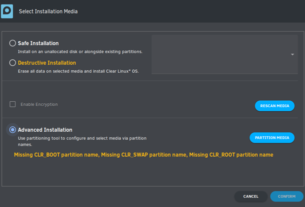
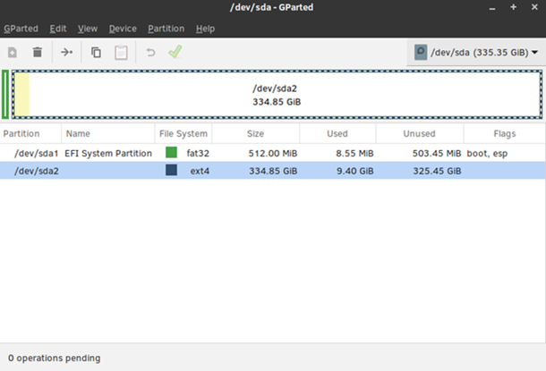
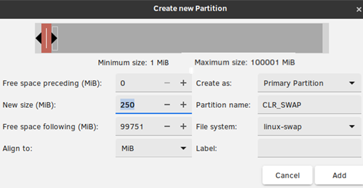
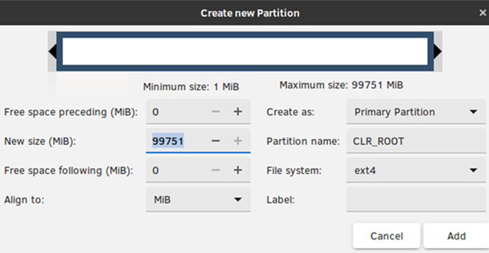
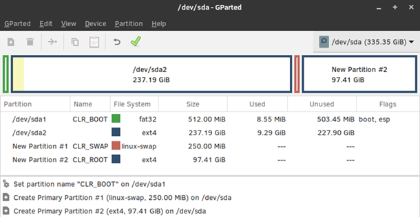
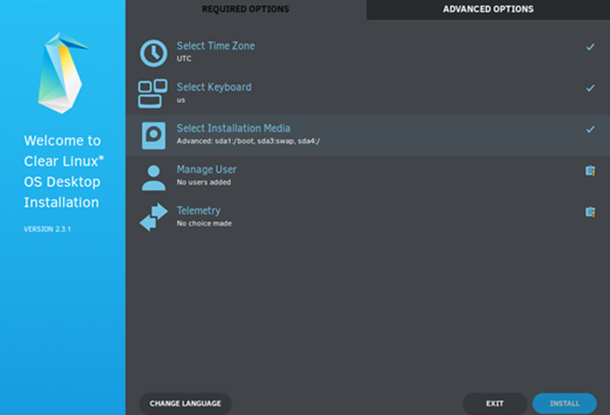
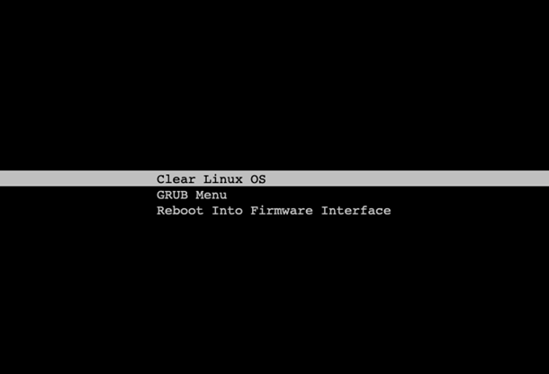

Dual-boot Clear Linux* OS with Any GRUB-based Linux* Distro¶
In this tutorial, we show how to install Clear Linux OS alongside any GRUB-based Linux* distro. To do so, we resize the existing Linux root partition to make room to install Clear Linux OS. Then we show 3 methods to dual-boot Clear Linux OS with an existing Linux distro.
Although we use Ubuntu* 19.04 Desktop as the example here, these instructions also work for other distros such as Mint*, Kubuntu*, Fedora*, CentOS*, among others.
Prerequisites¶
- Ubuntu 19.04 Desktop is already installed.
- There is no unallocated space available, but there is free space on the Ubuntu root partition.
- Follow the Preliminary steps that follow below.
Preliminary steps¶
Visit our Downloads page.
Download the file
clear-<release number>-live-desktop.iso, also called the Clear Linux OS Desktop.Note
<release-number> is the latest Clear Linux OS auto-numbered release.
Follow your OS instructions to create a bootable usb drive.
Install Clear Linux OS with Advanced Installation¶
Shut down the Ubuntu OS before proceeding.
Boot up the Clear Linux OS live desktop image, and click the penguin icon, at left, to launch the installer.
Complete the Required Options until you reach Select Installation Media. See Figure 1.

Figure 1: Required options
Click Select Installation Media.
Select the “Advanced Installation” option. See Figure 2.
Figure 2: Advanced Installation
Click Partition Media to start the GParted tool.
Shrink the Ubuntu root partition to free up some space for Clear Linux OS.
Select the Ubuntu root partition (in this example: /dev/sda2). Right-click it and select “Resize/Move”. See Figure 3.
Figure 3: Ubuntu root partition
In the New size (MiB) field, reduce the size of the root partition, leaving at least 22GB free. This allows enough space to create a swap partition (250MB) and root partition (approx. 21GB) for Clear Linux OS.
Note
The resulting free space appears in the “Free space following (MiB)”. Click the “Resize/Move” button. See Figure 4.

Figure 4: Resize Ubuntu root
Click the green checkmark button to proceed. See Figure 5.

Figure 5: New unallocated space
Share the existing EFI system partition by designating as such.
Create a swap partition for Clear Linux OS.
Right-click the “unallocated” partition and select New to add a new partition.
Enter “250” in the New Size (MiB) field to create a 250MB swap space.
Enter “CLR_SWAP” in the Partition name field and select “linux-swap” as the “File system” type.
Click the “Add” button. See Figure 8.
Figure 8: Create CLR_SWAP partition
Create Clear Linux OS root partition.
Right-click “unallocated” partition again and select New to add a new partition.
Create a partition that is at least 21GB, enter “CLR_ROOT” in the Partition name field, and select a File system type of your choice.
Click the “Add” button. See Figure 9.
Figure 9: Create CLR_ROOT partition
Click the green checkmark button to create the newly-defined partitions. See Figure 10.
Figure 10: Partitions to be created
Close the GParted window, and the Clear Linux OS installer will reappear with the newly-defined partitions to use. See Figure 11.
Figure 11: Clear Linux OS installer partitions defined
Complete the remaining steps of Required Options to to install Clear Linux OS. Complete any Advanced Options as desired.
{kind=link}
{kind=link}
{kind=link}
{kind=link}
{kind=link}
{kind=link}
{kind=link}
{kind=link}
Boot Clear Linux OS Using One of Three Methods¶
Although we installed Clear Linux OS last, Ubuntu is still the default boot OS. There are three methods to boot Clear Linux OS:
- Make systemd-boot, the boot loader that Clear Linux OS uses, the default boot loader to boot Clear Linux OS and also chain-boot GRUB; therefore, boot Ubuntu. See boot-clr-method-1.
- Use GRUB to chain-boot systemd-boot, therefore boot Clear Linux OS. See boot-clr-method-2.
- Use your BIOS “Boot Menu” to select and boot Clear Linux OS. Refer to your system’s manual on how to bring up the “Boot Menu”.
Method 1: Use systemd-boot to Boot Clear Linux OS and also Chain-boot GRUB¶
systemd-boot is the bootloader used by Clear Linux OS. Because Clear Linux OS was installed after a GRUB-based distro, GRUB is still the default bootloader. In this method, we make systemd-boot the default bootloader instead and also provide a path to chain-boot GRUB.
Boot up the Clear Linux OS installer image.
Open a terminal window.
Identify the EFI system partition, Ubuntu root partition, and Clear Linux OS root partition.
sudo fdisk -l
Example output:
clrlinux@clr-live~ $ sudo fdisk -l ... Disk /dev/sda: 335.4 GiB, 360080695296 bytes, 703282608 sectors Disk model: INTEL SSDSCKKF36 Units: sectors of 1 * 512 = 512 bytes Sector size (logical/physical): 512 bytes / 512 bytes I/O size (minimum/optimal): 512 bytes / 1048576 bytes Disklabel type: gpt Disk identifier: D5CB69E9-2C27-4A16-9552-3CD6BFA5DA77 Device Start End Sectors Size Type /dev/sda1 2048 1050623 1048576 512M EFI System /dev/sda2 1050624 498481151 497430528 237.2G Linux filesystem /dev/sda3 498481152 498993151 512000 250M Linux swap /dev/sda4 498993152 703281151 204288000 97.4G Linux root (x86-64) ...
The above example output contains these partitions:
/dev/sda1is the EFI system partition originally created by Ubuntu and shared with Clear Linux OS/dev/sda2is the Ubuntu root partition/dev/sda3is the swap partition for Clear Linux OS/dev/sda4is the Clear Linux OS root partition
The remaining steps will work with these partitions.
Mount these partitions.
sudo mkdir /mnt/clearlinux sudo mount /dev/sda4 /mnt/clearlinux/ sudo mount /dev/sda1 /mnt/clearlinux/boot
Make systemd-boot the default bootloader.
sudo bootctl install --esp-path=/mnt/clearlinux/bootAdd a timeout to systemd-boot so that it will present the menu of bootable OSes and give you time to select the one you want to boot.
sudo clr-boot-manager set-timeout 20 --path=/mnt/clearlinux sudo clr-boot-manager update --path=/mnt/clearlinux
Add a system-boot boot entry for GRUB.
sudo tee -a /mnt/clearlinux/boot/loader/entries/grub.conf << EOF title GRUB menu efi /EFI/ubuntu/grubx64.efi EOF
Umount all partitions.
sudo umount /mnt/clearlinux/boot /mnt/clearlinux
Reboot.
sudo reboot
Remove the Clear Linux OS installer USB thumb drive.
You should be presented with the systemd-boot menu. See Figure 12.
Figure 12: systemd-boot menu showing GRUB
{kind=link}
Method 2: Use GRUB to Boot Clear Linux OS¶
In this method, we keep GRUB as the default bootloader, but configure it to chain-boot systemd-boot, thus allowing us to boot Clear Linux OS. Again, we’re using Ubuntu as our working example.
Boot up Ubuntu.
Open a terminal window.
Set a timeout value for the GRUB menu so it will be visible at boot time and allow you select one which OS to boot.
sudoedit
/etc/default/grubsudoedit /etc/default/grub
Set the
GRUB_TIMEOUTvariable to a desired value.
Create a menu entry for systemd-boot bootloader.
Identify the UUID for EFI system partition that systemd-boot resides on. The example below shows the UUID for the EFI system on /dev/sda1 is “A5A0-337D”.
sudo blkid
Example output:
/dev/sda1: UUID="A5A0-337D" TYPE="vfat" PARTLABEL="CLR_BOOT" PARTUUID="ee664fec-1ade-40d0-9ce4-c08805003c8d" /dev/sda2: UUID="219969c5-1106-4e9f-b6f5-8188d7d94b8b" TYPE="ext4" PARTUUID="00bdf0dc-264d-493c-bf23-a85105011175" /dev/sda3: UUID="65221b07-33cb-40b7-9812-ea484c7606c9" TYPE="swap" PARTLABEL="CLR_SWAP" PARTUUID="5a7926b4-bd11-4bad-b932-cc31c0a75d27" /dev/sda4: UUID="0bedd545-58a7-4f34-b22a-c50bb4a1c2f5" TYPE="ext4" PARTLABEL="CLR_ROOT" PARTUUID="2d60cd03-5739-4cd5-adcc-51a107cde388"
sudoedit
/etc/grub.d/40_customand add a menu entry for Clear Linux OS using UUID from the previous step (for example):1 2 3 4 5 6 7 8 9 10
#!/bin/sh exec tail -n +3 $0 # This file provides an easy way to add custom menu entries. Simply type the # menu entries you want to add after this comment. Be careful not to change # the 'exec tail' line above. menuentry 'Clear Linux OS' { search --fs-uuid --no-floppy --set=root A5A0-337D chainloader (${root})/EFI/org.clearlinux/bootloaderx64.efi }
Update GRUB.
sudo update-grub
Reboot.
At the GRUB boot menu, select Clear Linux OS to boot Clear Linux OS.
Log in.
Open a terminal window.
By default, any future calls to clr-boot-manager, such as after a kernel update by swupd or setting the timeout value for systemd-boot, will modify the UEFI boot order which will result in making systemd-boot the first boot entry and you won’t be able to boot Ubuntu any longer. And in order to boot Ubuntu first, you must change the UEFI boot order back. To prevent clr-boot-manager from touching the UEFI boot order, which is especially important in a dual-boot setup, follow these steps:
sudo mkdir -p /etc/kernel sudo tee -a /etc/kernel/update_efi_vars << EOF false EOF
Tip
The default installation of Clear Linux OS does not set a timeout value for systemd-boot. Thus, you will not see the systemd-boot menu and the default kernel will boot right away. To set a timeout value (for example: 25 seconds), enter:
sudo clr-boot-manager set-timeout 25